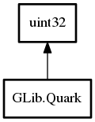

Quark
Object Hierarchy:

Description:
public struct Quark :
uint32
A GQuark is a non-zero integer which uniquely identifies a particular string.
A GQuark value of zero is associated to null.
Content:
Static methods:
- public static Quark from_string (string str)
Gets the Quark identifying the given
string.
- public static Quark try_string (string str)
Gets the Quark associated with the given
string, or 0 if string is null or it has no associated Quark.
Methods:
Inherited Members:
All known members inherited from struct uint32